MATH2731 Computational Mathematics II
Weierstrass Approximation Theorem (1885) For any \(f\in C([0,1])\) and any \(\epsilon > 0\), there exists a polynomial \(p(x)\) such that \[ \max_{0\leq x\leq 1}\big|f(x) - p(x)\big| \leq \epsilon. \]
Find \(p_n\) with \[ p_n(x_i) = f(x_i) \quad \text{at the \textbf{nodes} } x_0, x_1, \ldots, x_n. \]
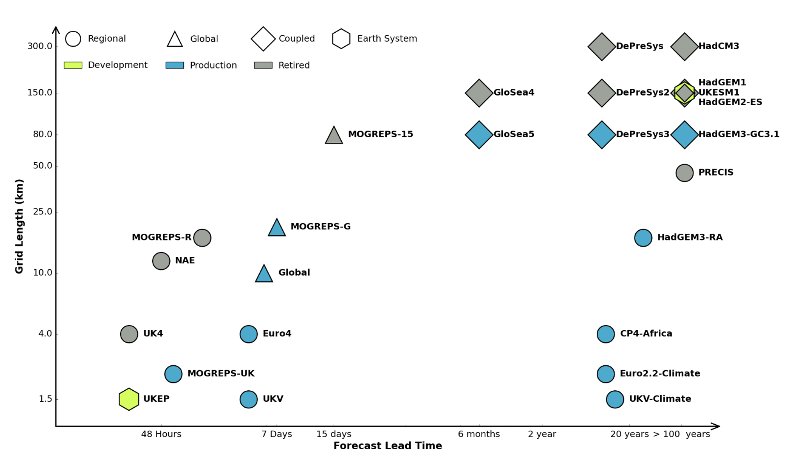
Calculate \(\sin(0.1)\) to 6 s.f.: \[ \sin(x) = x - \frac{x^3}{3!} + \frac{x^5}{5!} - \frac{x^7}{7!} + \ldots \]
\[\begin{align*} \textrm{1 term} \;&\implies\; \sin(0.1) \approx 0.1\\ \textrm{2 terms} \;&\implies\; \sin(0.1) \approx 0.1 - \frac{0.1^3}{6} = 0.099833\ldots\\ \textrm{3 terms} \;&\implies\; \sin(0.1) \approx 0.1 - \frac{0.1^3}{6} + \frac{0.1^5}{120} = 0.09983341\ldots \end{align*}\]
Next term: \(-0.1^7/7! \approx -2\times 10^{-11}\). Exact: \(\sin(0.1)=0.09983341\dots\)
Taylor’s Theorem Let \(f\) be \(n+1\) times differentiable on \((a,b)\), and let \(f^{(n)}\) be continuous on \([a,b]\). If \(x,x_0\in[a,b]\) then there exists \(\xi\) between \(x_0\) and \(x\) such that \[ f(x) = \underbrace{\sum_{k=0}^n\frac{f^{(k)}(x_0)}{k!}(x-x_0)^k}_{\text{Taylor polynomial}} \; + \; \underbrace{\frac{f^{(n+1)}(\xi)}{(n+1)!}(x-x_0)^{n+1}}_{\text{Lagrange remainder}}. \]
Error in \(\sin(0.1) \approx p_6(0.1)\) \(x - x^3/3! + x^5/5!\) is also \(p_6\), so use \(n=6\) with \(f^{(7)}(x) = -\cos(x)\): \[ \big|f(0.1) - p_6(0.1)\big| = \frac{1}{5040}(0.1)^7\big|\cos(\xi)\big| \quad \textrm{for some $\xi\in[0,0.1]$}. \]
Since \(|\cos(\xi)|\leq 1\), \[ \big|f(0.1) - p_6(0.1)\big| \leq 1.984\times 10^{-11}. \]
Actual error: \(1.984\times 10^{-11}\)
Find \[ p_n(x) = a_0 + a_1x + \ldots + a_n x^n \] with \(p_n(x_i) = f(x_i)\) at \(n+1\) distinct nodes: \(n+1\) unknowns, \(n+1\) conditions.
Linear interpolation (\(n=1\)) \[ \begin{cases} a_0 + a_1x_0 = f(x_0)\\ a_0 + a_1x_1 = f(x_1) \end{cases} \implies\quad p_1(x) = \frac{x_1f(x_0) - x_0f(x_1)}{x_1 - x_0} + \frac{f(x_1) - f(x_0)}{x_1 - x_0}x. \]
\[ \underbrace{\begin{pmatrix} 1 & x_0 & x_0^2 & \cdots & x_0^n\\ 1 & x_1 & x_1^2 & \cdots & x_1^n\\ \vdots & \vdots &\vdots& & \vdots\\ 1 & x_n & x_n^2 & \cdots & x_n^n\\ \end{pmatrix}}_{V} \begin{pmatrix} a_0\\ a_1\\ \vdots\\ a_n \end{pmatrix} = \begin{pmatrix} f(x_0)\\ f(x_1)\\ \vdots\\ f(x_n) \end{pmatrix}, \qquad \det(V) = \prod_{0\leq i < j\leq n} (x_j - x_i) \]
Existence/uniqueness Given \(n+1\) distinct nodes \(x_0, x_1, \ldots, x_n\), there is a unique polynomial \(p_n\in\mathcal{P}_n\) that interpolates \(f(x)\) at these nodes.
Suppose \(q_n\in\mathcal{P}_n\) also interpolates \(f\). Let \(r_n := p_n - q_n \in \mathcal{P}_n\).
\[ r_n(x_i) = p_n(x_i) - q_n(x_i) = f(x_i)-f(x_i)=0 \quad \textrm{for $i=0,\ldots,n$} \]
Interpolate \(f(x)=\cos(x)\) with \(p_2\in\mathcal{P}_2\) at \(\{0, \tfrac{\pi}{2}, \pi\}\) \(f(x_0)=1\), \(f(x_1)=0\), \(f(x_2)=-1 \implies p_2(x) = 1 - \tfrac2\pi x\)
Nodes \(\{0,2\pi,4\pi\} \implies p_2(x)=1\)
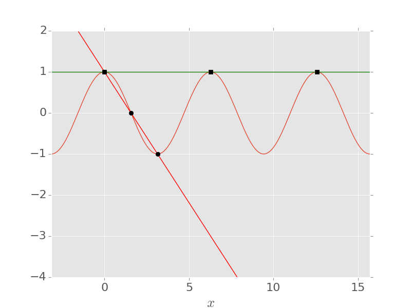
% Quadratic interpolant of cos(x) at three nodes
x = linspace(-pi/4, pi/4, 3)';
a = vander(x) \ cos(x); % coefficients, highest power first
xx = linspace(-1, 1, 200);
figure
plot(xx, cos(xx), 'LineWidth', 3), hold on
plot(xx, polyval(a, xx), '--', 'LineWidth', 3)
plot(x, cos(x), 'ko', 'MarkerSize', 10, 'MarkerFaceColor', 'k'), hold off
legend('f(x) = cos(x)', 'interpolant p_2(x)', 'nodes', 'Location', 'south')
xlabel('x'), ylabel('y'), set(gca, 'FontSize', 18), grid on
% The condition number grows rapidly with n
for n = [5 10 20 30]
x = linspace(-1, 1, n+1)';
fprintf('n = %2d, cond(V) = %.2e\n', n, cond(vander(x)));
endChoose a basis \(\{\ell_k\}\) so that the coefficients are just the function values: \[ p_n(x) = \sum_{k=0}^n f(x_k)\ell_k(x). \]
Linear interpolation again \[ p_1(x) = \underbrace{\frac{x - x_1}{x_0 - x_1}}_{\ell_0(x)}f(x_0) + \underbrace{\frac{x-x_0}{x_1-x_0}}_{\ell_1(x)}f(x_1) \] \(\ell_0(x_0) = 1\), \(\ell_0(x_1)=0\), \(\quad \ell_1(x_0) = 0\), \(\ell_1(x_1)=1\)
Lagrange polynomials \[ \ell_k(x) = \prod_{\substack{j=0\\j\neq k}}^n\frac{x - x_j}{x_k - x_j}, \qquad \ell_k(x_i) = \begin{cases} 1 & \textrm{if $i=k$},\\ 0 & \textrm{otherwise}. \end{cases} \]
\(f(x)=\cos(x)\) with nodes \(\{-\tfrac\pi4, 0, \tfrac\pi4\}\) \[ \ell_0(x) = \frac{x(x-\tfrac\pi4)}{\tfrac\pi4\cdot\tfrac\pi2}, \qquad \ell_1(x) = \frac{(x+\tfrac\pi4)(x-\tfrac\pi4)}{-\tfrac\pi4\cdot\tfrac\pi4}, \qquad \ell_2(x) = \frac{x(x+\tfrac\pi4)}{\tfrac\pi2\cdot\tfrac\pi4} \]
\[ \begin{aligned} p_2(x) &= \tfrac{1}{\sqrt{2}}\ell_0(x) + \ell_1(x) + \tfrac{1}{\sqrt{2}}\ell_2(x) = \tfrac{16}{\pi^2}\big(\tfrac{1}{\sqrt{2}} - 1\big)x^2 + 1 \end{aligned} \]
\[ p_2(x) = \tfrac{16}{\pi^2}\big(\tfrac{1}{\sqrt{2}} - 1\big)x^2 + 1 \]
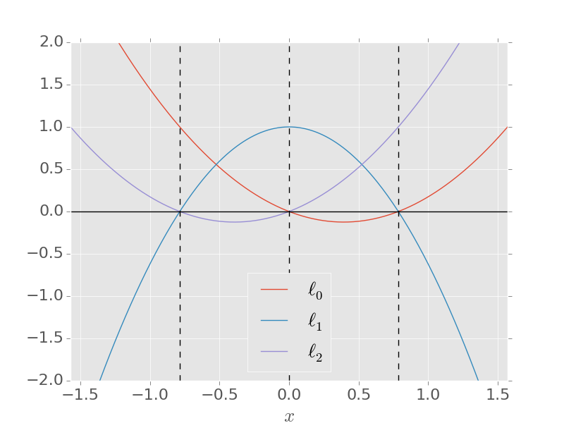
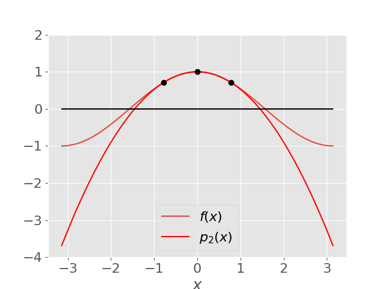
x = [-pi/4, 0, pi/4]; % nodes
xx = linspace(-1, 1, 200);
figure, hold on
for k = 1:length(x)
others = x([1:k-1, k+1:end]);
ell_k = prod((xx' - others) ./ (x(k) - others), 2); % l_k evaluated on the grid
plot(xx, ell_k, 'LineWidth', 3, 'DisplayName', sprintf('$\\ell_%d(x)$', k-1))
end
plot(x, zeros(size(x)), 'ko', 'MarkerSize', 10, 'MarkerFaceColor', 'k', 'DisplayName', 'nodes')
hold off
legend('Interpreter', 'latex', 'Location', 'southoutside', 'Orientation', 'horizontal')
xlabel('x'), set(gca, 'FontSize', 18), grid on\(f(x)=\cos(x)\) with \(\{-\tfrac\pi4,0,\tfrac\pi4\}\) \[ |f(x) - p_2(x)| = \left|\cos(x) - \tfrac{16}{\pi^2}\left(\tfrac{1}{\sqrt{2}}-1\right)x^2 - 1\right| \]
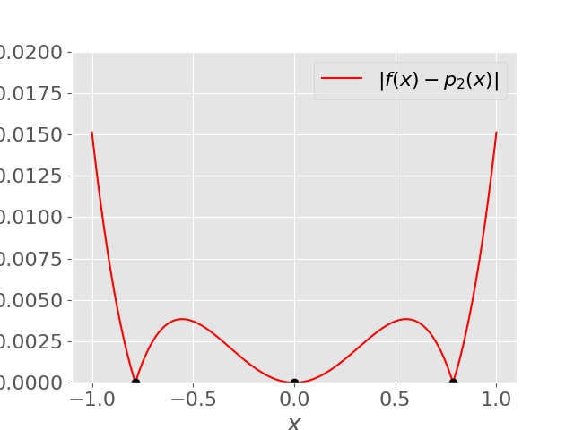
Cauchy’s Interpolation Error Theorem Let \(p_n\in{\cal P}_n\) interpolate \(f(x)\) at the \(n+1\) distinct nodes \(x_0, \ldots, x_n \in [a,b]\), and let \(f\) be continuous on \([a,b]\) with \(n+1\) continuous derivatives on \((a,b)\). Then for each \(x\in[a,b]\) there exists \(\xi\in(a,b)\) such that \[ f(x) - p_n(x) = \frac{f^{(n+1)}(\xi)}{(n+1)!}(x-x_0)(x-x_1)\cdots(x-x_n). \]
\(f(x)=\cos(x)\) with \(\{-\tfrac\pi4,0,\tfrac\pi4\}\), \(x\in[-1,1]\) \[ f(x) - p_2(x) = \tfrac16\sin(\xi)\,\underbrace{x(x+\tfrac\pi4)(x-\tfrac\pi4)}_{w(x)}, \qquad \xi\in[-1,1] \]
\(w'(x) = 3x^2 - \tfrac{\pi^2}{16} = 0 \implies x=\pm\tfrac\pi{4\sqrt{3}}\) \[ w(\mp\tfrac\pi{4\sqrt{3}}) = \pm 0.186\ldots, \qquad w(\pm 1) = \pm 0.383\ldots \]
\[ |f(x) - p_2(x)| \leq \tfrac16(0.383) = 0.0638\ldots \]
\(f(x) = 1/(1 + 25x^2)\) on \([-1,1]\) with equally spaced nodes:
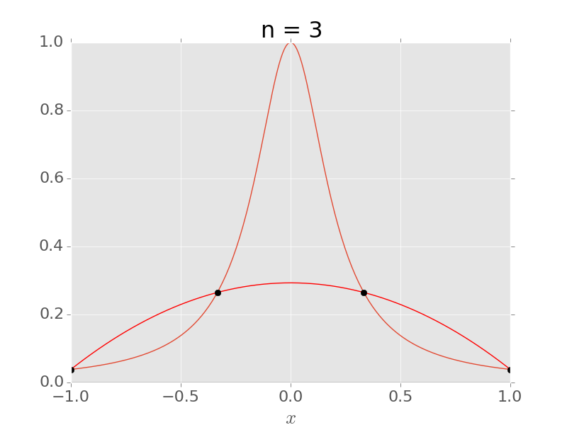
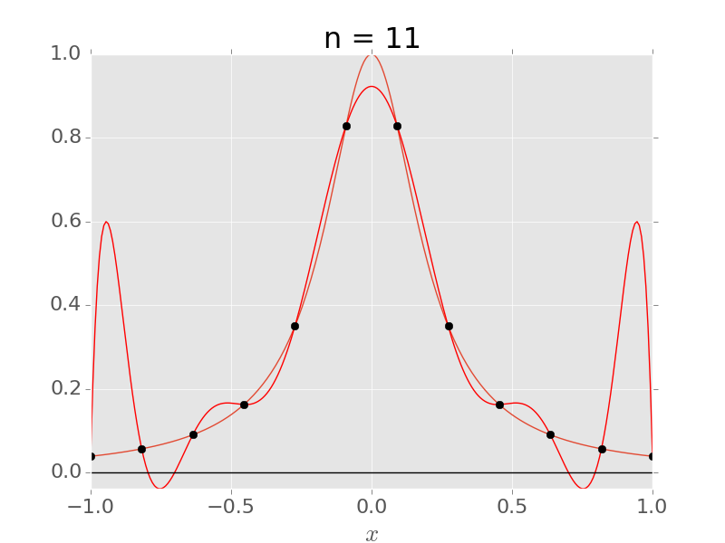
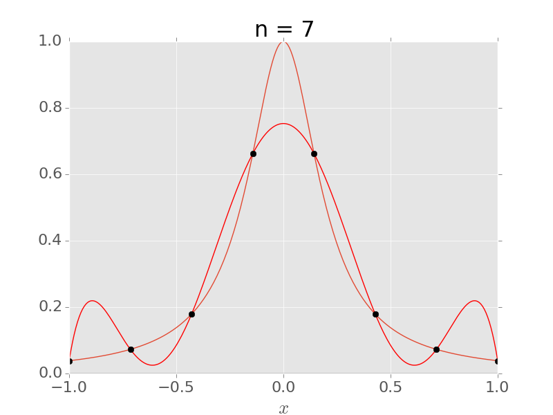
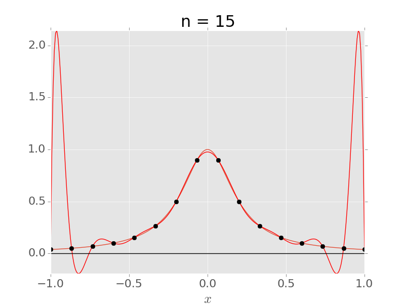
The node polynomial in the error formula, \[ w(x) = \prod_{i=0}^n(x-x_i), \] is large near the ends for equally spaced nodes \(\implies\) put more nodes there.
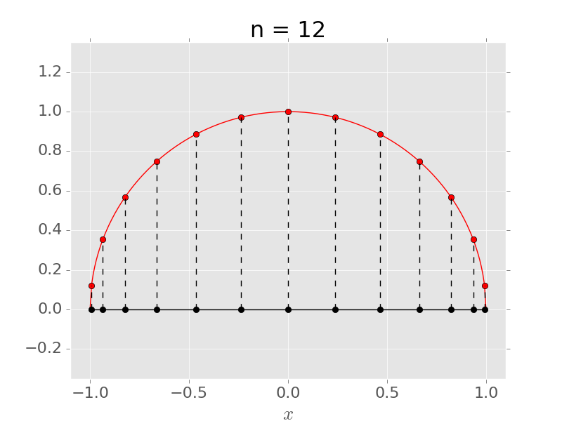
\[ \begin{aligned} \phi_j &= \frac{(2j+1)\pi}{2(n+1)},\\[0.5em] x_j &= \cos\left[\frac{(2j + 1)\pi}{2(n+1)}\right], \end{aligned} \qquad j=0,\ldots,n \]
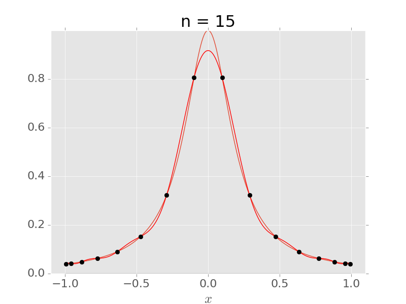
\[ \max_{[-1,1]}|f - p_n| \leq \frac{\max_{[-1,1]}\big|f^{(n+1)}\big|}{2^n(n+1)!} \]
f = @(x) 1 ./ (1 + 25*x.^2); % Runge function
xx = linspace(-1, 1, 1000);
for n = [5 10 15 20]
xe = linspace(-1, 1, n+1); % equally spaced nodes
xc = cos((2*(0:n) + 1)*pi / (2*(n+1))); % Chebyshev nodes
pe = polyval(polyfit(xe, f(xe), n), xx);
pc = polyval(polyfit(xc, f(xc), n), xx);
fprintf('n = %2d: max error equispaced %.2e, Chebyshev %.2e\n', ...
n, max(abs(f(xx) - pe)), max(abs(f(xx) - pc)));
end% Side-by-side plots for n = 15
n = 15;
xe = linspace(-1, 1, n+1);
xc = cos((2*(0:n) + 1)*pi / (2*(n+1)));
nodes = {xe, xc};
titles = {'Equally spaced nodes', 'Chebyshev nodes'};
figure
for j = 1:2
subplot(1, 2, j)
xn = nodes{j};
plot(xx, f(xx), 'LineWidth', 3), hold on
plot(xx, polyval(polyfit(xn, f(xn), n), xx), '--', 'LineWidth', 3)
plot(xn, f(xn), 'ko', 'MarkerSize', 8, 'MarkerFaceColor', 'k'), hold off
ylim([-0.5 2.5]), grid on
title(sprintf('%s, n = %d', titles{j}, n))
legend('Runge function f(x)', 'interpolant p_n(x)', 'nodes', 'Location', 'north')
xlabel('x'), set(gca, 'FontSize', 18)
end\[ f(x) = 0 \]
\(f(x) = \frac{1}{x} - a\), for \(a > 0\)
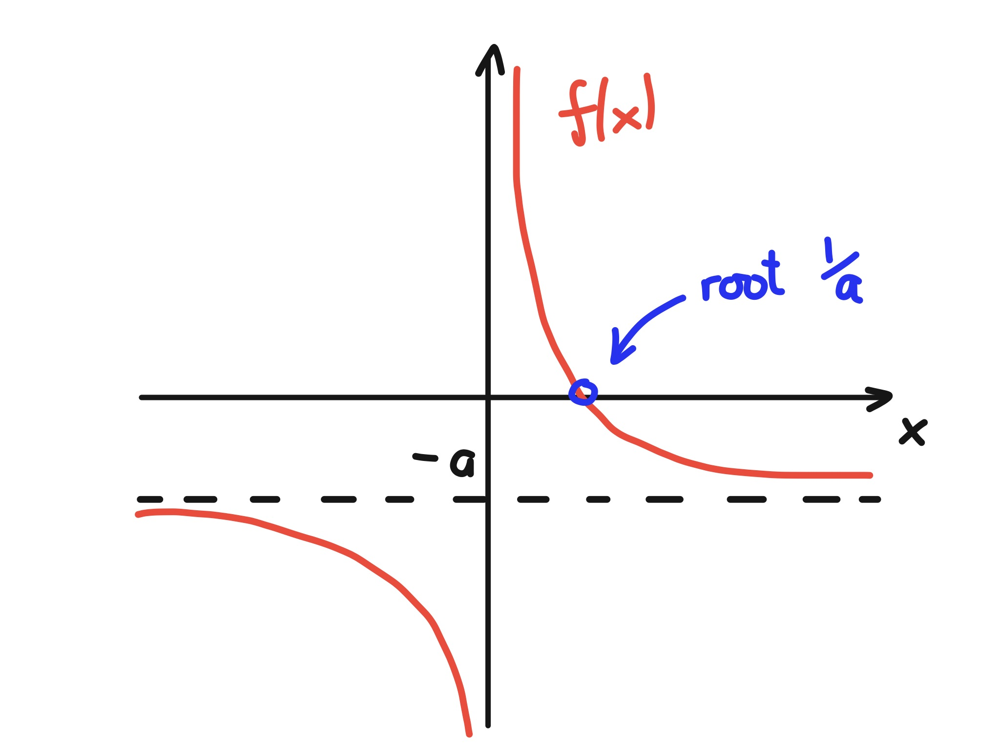
Intermediate Value Theorem If \(f\) is continuous on \([a,b]\) and \(c\) lies between \(f(a)\) and \(f(b)\), then there is at least one \(x\in[a,b]\) with \(f(x)=c\).
Interval bisection Let \(f\) be continuous on \([a_0,b_0]\), with \(f(a_0)f(b_0)<0\).
\(f(x)=\tfrac1x - 0.5\) \([a_0,b_0]=[1,3]\): \(\;m_0 = 2\), \(f(m_0)=0\). Lucky!
\([a_0,b_0]=[1.5,3]\): \(\;f(a_0)=0.1666\), \(f(b_0)=-0.1666\)
| \(k\) | \(a_k\) | \(b_k\) | \(m_k\) | \(f(m_k)\) |
|---|---|---|---|---|
| 0 | 1.5 | 3 | 2.25 | \(-0.0555\) |
| 1 | 1.5 | 2.25 | 1.875 | \(0.0333\) |
| 2 | 1.875 | 2.25 | … | … |
Same \(f\), initial interval \([-0.5,0.5]\)
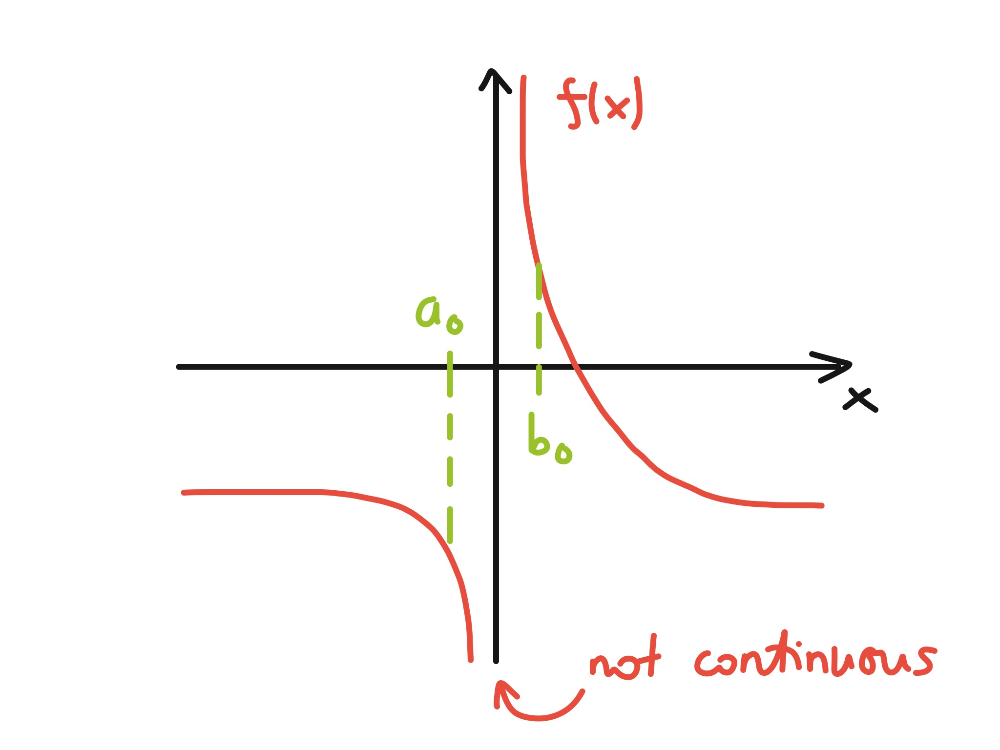
\(f(a_0)f(b_0)<0\) but no root: \(f\) is not continuous on \([-0.5,0.5]\).
\[ |b_k - a_k| = \frac{|b_0 - a_0|}{2^k} \quad\implies\quad |m_k - x_*| \leq \frac{|b_0 - a_0|}{2^{k+1}} \]
For \(|m_k - x_*| \leq \delta\) it is enough that \[ k \geq \frac{\log|b_0-a_0| - \log(\delta)}{\log(2)} - 1. \]
\(a_0=1.5\), \(b_0=3\), \(\delta = \epsilon_{\rm M}=1.1\times 10^{-16}\) \[ k \geq \frac{\log(1.5) - \log(1.1\times 10^{-16})}{\log(2)}-1 \quad \implies k \geq 53 \textrm{ iterations}. \]
Rewrite \(f(x)=0\) as \(x = g(x)\), then iterate \[ x_{k+1} = g(x_k). \]
\(f(x)=x^2-2x-3\), roots \(-1\) and \(3\), \(x_0=0\)
| \(g(x)\) | \(x_0 = 0\) | \(x_0 = 42\) | |
|---|---|---|---|
| (a) | \(\sqrt{2x+3}\) | \(\to 3\) (33 its) | \(\to 3\) |
| (b) | \(3/(x-2)\) | \(\to -1\) (33 its) | \(\to -1\) |
| (c) | \((x^2 - 3)/2\) | \(\to -1\) (slowly!) | diverges |
| (d) | \(x^2 - x - 3\) | diverges | diverges |
| (e) | \((x^2+3)/(2x-2)\) | \(\to -1\) (5 its) | \(\to 3\) |
Contraction mapping A map \(g: L\to L\) on a closed interval \(L\) such that, for some \(\lambda < 1\), \[ |g(x)-g(y)| \leq \lambda|x-y| \quad \text{for all } x, y \in L. \]
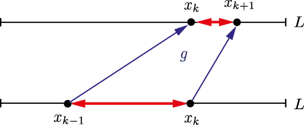
Contraction Mapping Theorem If \(g\) is a contraction mapping on \(L=[a,b]\), then
Checking the contraction property: by the mean value theorem, \[ |g(x)-g(y)| \leq \Big(\max_{\xi\in L}|g'(\xi)|\Big)\,|x-y|. \]
So it suffices that (a) \(g:L\to L\) and (b) \(|g'(x)|\leq M < 1\) on \(L\).
Iteration (a), \(g(x) = \sqrt{2x + 3}\) \[ g'(x)=(2x + 3)^{-1/2} \implies |g'(x)|<1 \text{ for all } x>-1 \]
\(g\) is increasing, \(g(-\tfrac12)=\sqrt{2}\), \(g(4)=\sqrt{11}\), so \(g\) maps \(L=[-\tfrac12,4]\) into itself.
\(\implies\) unique fixed point \(x_*\in[-\tfrac12,4]\) (namely \(x_*=3\)), and convergence from any \(x_0 \in L\).
Local Convergence Theorem Let \(g\) and \(g'\) be continuous in the neighbourhood of an isolated fixed point \(x_*=g(x_*)\). If \(|g'(x_*)|<1\) then there is an interval \(L=[x_*-\delta,x_*+\delta]\) such that \(x_{k+1}=g(x_k)\) converges to \(x_*\) whenever \(x_0\in L\).
(a) \(g(x)=\sqrt{2x+3}\)
| \(x_k\) | \(|3-x_k|\) | ratio |
|---|---|---|
| 0.0000000000 | 3.0000000000 | - |
| 1.7320508076 | 1.2679491924 | 0.4226 |
| 2.5424597568 | 0.4575402432 | 0.3609 |
| 2.8433992885 | 0.1566007115 | 0.3423 |
| 2.9473375404 | 0.0526624596 | 0.3363 |
| 2.9823941860 | 0.0176058140 | 0.3343 |
| 2.9941256440 | 0.0058743560 | 0.3337 |
(e) \(g(x) = (x^2+3)/(2x-2)\)
| \(x_k\) | \(|(-1)-x_k|\) | ratio |
|---|---|---|
| 0.0000000000 | 1.0000000000 | - |
| -1.5000000000 | 0.5000000000 | 0.5000 |
| -1.0500000000 | 0.0500000000 | 0.1000 |
| -1.0006097561 | 0.0006097561 | 0.0122 |
| -1.0000000929 | 0.0000000929 | 0.0002 |
ratio \(= |x_*-x_k|/|x_*-x_{k-1}|\)
Linear and superlinear convergence Suppose \(x_k\to x_*\). Then \(\{x_k\}\) converges linearly with rate \(\lambda\) if \[ \lim_{k\to\infty}\frac{|x_*-x_{k+1}|}{|x_*-x_k|} = \lambda \quad \textrm{with} \quad 0<\lambda <1. \] If \(\lambda=0\), the convergence is superlinear.
Theorem Let \(g'\) be continuous near a fixed point \(x_*=g(x_*)\), and suppose \(x_{k+1}=g(x_k)\) converges to \(x_*\).
By the mean value theorem, for some \(\xi_k\) between \(x_*\) and \(x_k\), \[ x_* - x_{k+1} = g(x_*) - g(x_k) = g'(\xi_k)(x_* - x_k). \]
Since \(x_k\to x_*\), we have \(\xi_k\to x_*\), so \[ \lim_{k\to\infty}\frac{|x_*-x_{k+1}|}{|x_*-x_k|} = \lim_{k\to\infty}|g'(\xi_k)| = |g'(x_*)|. \quad\blacksquare \]
Order of convergence \(\{x_k\}\) converges with order \(\alpha\) if \[ \lim_{k\to\infty}\frac{|x_*-x_{k+1}|}{|x_*-x_k|^\alpha} = C \quad \textrm{for some} \quad 0 < C < \infty. \] \(\alpha=1\): linear, \(\alpha=2\): quadratic, \(\alpha=3\): cubic.
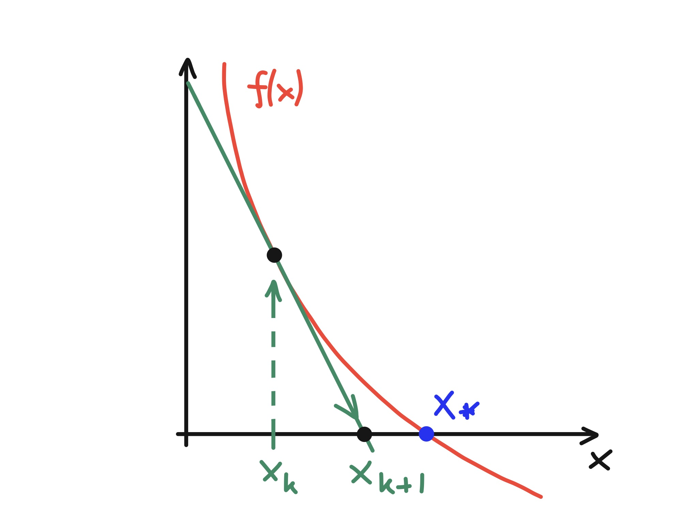
Tangent line at \(x_k\): \[ \frac{0 - f(x_k)}{x_{k+1} - x_k} = f'(x_k) \]
\[ \implies x_{k+1} = x_k - \frac{f(x_k)}{f'(x_k)} \]
Equivalently, from Taylor: \[ 0 \approx f(x_k) + f'(x_k)(x_{k+1} - x_{k}) \]
\[ g(x) = x - \frac{f(x)}{f'(x)} \quad\implies\quad g'(x) = \frac{f(x)f''(x)}{[f'(x)]^2} \quad\implies\quad g'(x_*)=0 \;\; \textrm{if $f'(x_*)\neq 0$} \]
In fact, \[ x_*-x_{k+1} = -\frac{f''(x_*)}{2f'(x_*)}(x_*-x_k)^2 + {\cal O}\big((x_*-x_k)^3\big) \] so the convergence is quadratic if \(f''(x_*)\neq 0\).
Calculate \(a^{-1}\) using \(f(x)=\frac1x - a\) \[ x_{k+1} = x_k - \frac{\frac{1}{x_k}-a}{-\frac{1}{x_k^2}} = 2x_k - a x_k^2, \qquad \tfrac1a - x_{k+1} = a\big(\tfrac1a - x_k\big)^2 \]
With \(a=0.5\), \(x_0=1\):
| \(x_k\) | \(|2 - x_k|\) | \(|2-x_k|/|2-x_{k-1}|\) | \(|2-x_k|/|2-x_{k-1}|^2\) |
|---|---|---|---|
| 1.0 | 1.0 | - | - |
| 1.5 | 0.5 | 0.5 | 0.5 |
| 1.875 | 0.125 | 0.25 | 0.5 |
| 1.9921875 | 0.0078125 | 0.0625 | 0.5 |
| 1.999969482 | \(3.05\times 10^{-5}\) | 0.00390625 | 0.5 |
| 2.0 | \(4.65\times 10^{-10}\) | \(1.53\times 10^{-5}\) | 0.5 |
| 2.0 | \(1.08\times 10^{-19}\) | \(2.33\times 10^{-10}\) | 0.5 |
\(f(x) = x^3-2x+2\) Turning points at \(x=\pm\sqrt{\tfrac23}\); single real root \(x_*\approx -1.769\).
\(x_0=0 \implies x_1 = 1 \implies x_2 = 0 \implies \ldots\)
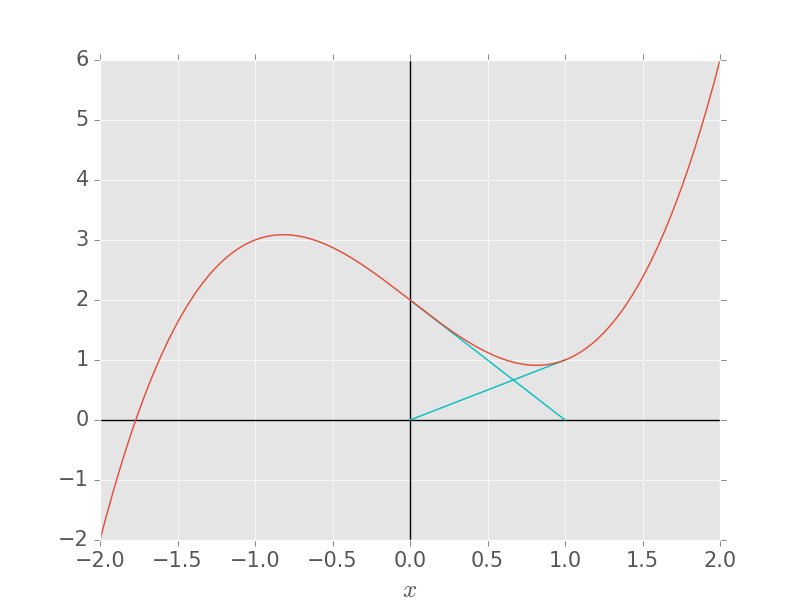
\(f(z) = z^3 - 1\): colour each \(z_0\in\mathbb{C}\) by the root Newton’s method converges to.
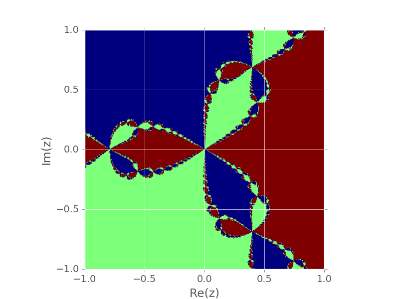
% Bisection, fixed-point iteration (a) and Newton's method for x^2 - 2x - 3 = 0
f = @(x) x.^2 - 2*x - 3;
df = @(x) 2*x - 2;
xs = 3; % the root we are aiming for
N = 40; eb = zeros(N,1); ef = eb; en = eb;
a = 2; b = 5; xf = 0; xn = 5; % starting values
for k = 1:N
m = (a + b)/2; eb(k) = abs(m - xs);
if f(a)*f(m) >= 0, a = m; else, b = m; end
xf = sqrt(2*xf + 3); ef(k) = abs(xf - xs);
xn = xn - f(xn)/df(xn); en(k) = abs(xn - xs);
end
figure
semilogy(1:N, eb, 'o-', 1:N, ef, 's-', 1:N, en, '^-', 'LineWidth', 2.5, 'MarkerSize', 8)
legend('bisection', 'fixed point (a)', 'Newton', 'Location', 'southwest')
xlabel('iteration k'), ylabel('error |x_k - x_*|'), set(gca, 'FontSize', 18), grid onSolve \(\mathbf{f}(\mathbf{x})=\mathbf{0}\) for \(\mathbf{x}\in\mathbb{R}^m\). Linearise about \(\mathbf{x}_k\): \[ \begin{pmatrix} 0\\ 0 \end{pmatrix} = \begin{pmatrix} f_1(\mathbf{x}_k)\\ f_2(\mathbf{x}_k) \end{pmatrix} + \underbrace{\begin{pmatrix} \frac{\partial f_1}{\partial x_1}(\mathbf{x}_k) & \frac{\partial f_1}{\partial x_2}(\mathbf{x}_k)\\ \frac{\partial f_2}{\partial x_1}(\mathbf{x}_k) & \frac{\partial f_2}{\partial x_2}(\mathbf{x}_k) \end{pmatrix}}_{J(\mathbf{x}_k)} \begin{pmatrix} x_{1,k+1} - x_{1,k}\\ x_{2,k+1} - x_{2,k} \end{pmatrix} \]
At each step:
Never compute \(J^{-1}\) explicitly.
\(xy - y^3 - 1 = 0\), \(\; x^2y + y -5=0\), \(\; (x_0, y_0) = (2, 3)\) \[ J(x,y) = \begin{pmatrix} y & x-3y^2\\ 2xy & x^2 + 1 \end{pmatrix}, \qquad J(2,3) = \begin{pmatrix} 3 & -25\\ 12 & 5 \end{pmatrix}, \qquad \mathbf{f}(2,3) = \begin{pmatrix} -22\\ 10 \end{pmatrix} \]
\[ \boldsymbol{\delta}_0 = \begin{pmatrix} -\tfrac49 \\ -\tfrac{14}{15} \end{pmatrix} \implies \begin{pmatrix} x_1\\ y_1 \end{pmatrix} = \begin{pmatrix} 2\\ 3 \end{pmatrix} + \begin{pmatrix} -0.44444444\\ -0.93333333 \end{pmatrix} = \begin{pmatrix} 1.55555556\\ 2.06666667 \end{pmatrix} \]
| \(k\) | \(x_k\) | \(y_k\) |
|---|---|---|
| 2 | 1.54720541 | 1.47779333 |
| 3 | 1.78053503 | 1.15886481 |
| 4 | 1.95284300 | 1.02844269 |
| 5 | 1.99776297 | 1.00124041 |
| 6 | 1.99999524 | 1.00000260 |
Quadratic convergence if \(J(\mathbf{x}_*)\) is non-singular.
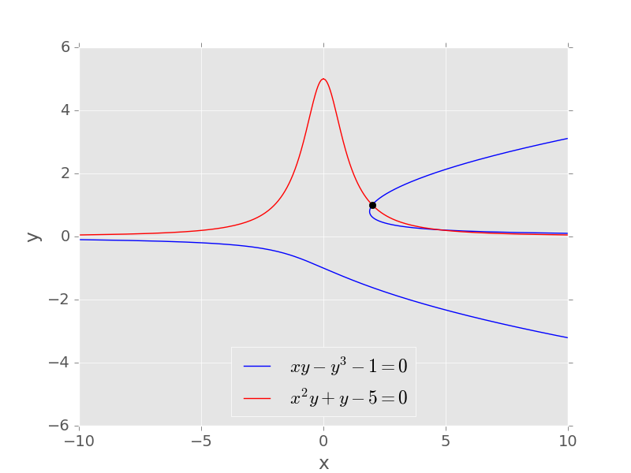
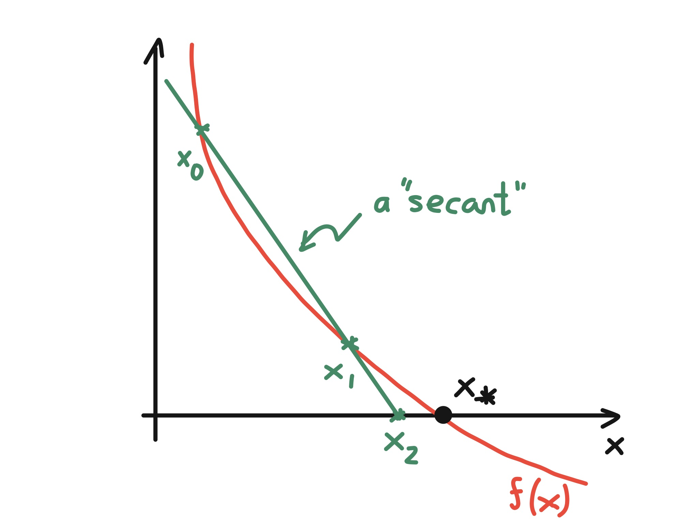
Quasi-Newton: \[ x_{k+1} = x_k - \frac{f(x_k)}{g_k}, \quad g_k \approx f'(x_k) \]
Backward difference: \[ g_k = \frac{f(x_k) - f(x_{k-1})}{x_k - x_{k-1}} \]
\[ \implies x_{k+1} = x_k - \frac{f(x_k)(x_k - x_{k-1})}{f(x_k) - f(x_{k-1})} \]
\(f(x)=\tfrac1x - 0.5\), \(\; x_0=0.25\), \(x_1=0.5\)
| \(k\) | \(x_k\) | ratio |
|---|---|---|
| 2 | 0.6875 | 0.875 |
| 3 | 1.01562 | 0.75 |
| 4 | 1.354 | 0.656 |
| 5 | 1.68205 | 0.492 |
| 6 | 1.8973 | 0.323 |
| 7 | 1.98367 | 0.159 |
| 8 | 1.99916 | 0.051 |
Theorem If \(f'(x_*)\neq 0\), the secant method converges for \(x_0\), \(x_1\) sufficiently close to \(x_*\), with \[ x_*-x_{k+1} \approx -\frac{f''(x_*)}{2f'(x_*)}(x_*-x_k)(x_*-x_{k-1}), \] and order of convergence \(\frac{1+\sqrt{5}}{2} = 1.618\ldots\)